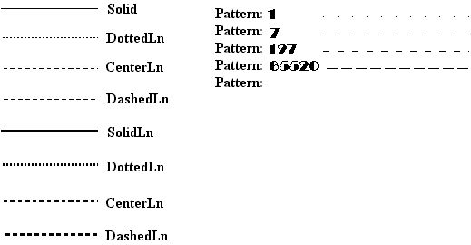
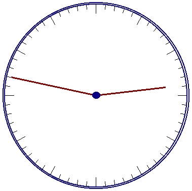

|
|
|
|
Линии и точки
Процедура PutPixel.
Выводит заданным цветом точку по указанным координатам. Заголовок:
Procedure PutPixel(X,Y: Integer; Color: Word);
Здесь X, Y- координаты точки; Color - цвет точки.
Координаты задаются относительно левого верхнего угла окна или, если окно не установлено, относительно левого верхнего угла экрана.
Следующая программа периодически выводит на экран «звездное небо» и затем гасит его. Для выхода из программы нажмите любую клавишу.
Uses CRT, Graph;
type
PixelType = record
x, у : Integer; end;
const
N = 5000; {Количество "звезд"}
var
d,r,e,k: Integer;
x1,y1,x2,y2: Integer;
a: array [1..N] of PixelType; {Координаты}
begin
{Инициируем графику}
d := Detect; InitGraph(d, r, ' ') ;
e := GraphResult; if e<>grOk then
WriteLn(GraphErrorMsg(e))
else
begin
{Создаем окно в центре экрана}
x1 := GetMaxX div 4;
y1 := GetMaxY div 4;
x2 := 3*x1;
y2 := 3*y1;
Rectangle(x1,y1,x2,y2);
SetViewPort(x1+1,y1+1,x2-1,y2-1,ClipOn);
{Создаем и запоминаем координаты всех "звезд"}
for k := 1 to N do with a[k] do begin
x := Random(x2-x1);
у := Random(y2-y1)
end;
{Цикл вывода}
repeat
for k := 1 to N do
with a[k] do {Зажигаем "звезду"}
PutPixel(x,y,white);
if not KeyPressed then
for k := N downto 1 do with a[k] do {Гасим "звезду"}
PutPixel(x,y,black)
until KeyPressed;
while KeyPressed do k := ord(ReadKey);
CloseGraph
end;
end.
Функция GetPixel.
Возвращает значение типа Word, содержащее цвет пикселя с указанными координатами. Заголовок:
Function GetPixel(X,Y: Integer): Word;
Здесь X, Y - координаты пикселя.
Процедура Line.
Вычерчивает линию с указанными координатами начала и конца. Заголовок:
Procedure Line(X1,Y1,X2,Y2: Integer);
Здесь XL. .Yl - координаты начала (XI, Y1) и конца (Х2, Y2) линии.
Линия вычерчивается текущим стилем и текущим цветом. В следующей программе в центре экрана создается окно, которое затем расчерчивается случайными линиями. Для выхода из программы нажмите любую клавишу.
Uses CRT, Graph;
var
d,r,e : Integer;
x1,y1,x2,y2: Integer;
begin
{Инициируем графику}
d := Detect; InitGraph(d, r, '');
e := GraphResult; if e <> grOk then
WriteLn(GraphErrorMsg(e))
else
begin
{Создаем окно в центре экрана}
x1 := GetMaxX div 4;
y1 := GetMaxY div 4;
x2 := 3*x1;
y2 := 3*y1;
Rectangle(x1,y1,x2,y2);
SetViewPort(x1+1,y1+1,x2-1,y2-1,ClipOn);
{Цикл вывода случайных линий}
repeat
SetColor(succ(Random(16))); {Случайный цвет}
Line(Random(x2-x1), Random(y2-y1),
Random(x2-x1), Random(y2-y1))
until KeyPressed;
if ReadKey=#0 then d:= ord(ReadKey);
CloseGraph
end
end.
Процедура LineTo.
Вычерчивает линию от текущего положения указателя до положения, заданного его новыми координатами. Заголовок:
Procedure LineTo(X,Y: Integer);
Здесь X, Y - координаты нового положения указателя, они же - координаты второго конца линии.
Процедура LineRel.
Вычерчивает линию от текущего положения указателя до положения, заданного приращениями его координат. Заголовок:
Procedure LineRel (DX, DY: Integer);
Здесь DX, DY- приращения координат нового положения указателя. В процедурах LineTo и LineRel линия вычерчивается текущим стилем и текущим цветом.
Процедура SetLineStyle.
Устанавливает новый стиль вычерчиваемых линий. Заголовок:
Procedure SetLineStyle(Type,Pattern,Thick: Word)
Здесь Type, Pattern, Thick - соответственно тип, образец и толщина линии. Тип линии может быть задан с помощью одной из следующих констант:
const
SolidLn= 0; {Сплошная линия}
DottedLn= 1; {Точечная линия}
CenterLn= 2; {Штрих-пунктирная линия}
DashedLn= 3; {Пунктирная линия}
UserBitLn= 4; {Узор линии определяет пользователь}
Параметр Pattern учитывается только для линий, вид которых определяется пользователем (т.е. в случае, когда Туре = UserBitLn). При этом два байта параметра Pattern определяют образец линии: каждый установленный в единицу бит этого слова соответствует светящемуся пикселю в линии, нулевой бит - несветящемуся пикселю. Таким образом, параметр Pattern задает отрезок линии длиной в 16 пикселей. Этот образец периодически повторяется по всей длине линии.
Параметр Thick может принимать одно из двух значений:
const
NormWidth = 1; {Толщина в один пиксель}
ThickWidth = 3; {Толщина в три пикселя}
Отметим, что установленный процедурой стиль линий (текущий стиль) используется при построении прямоугольников, многоугольников и других фигур.
В следующем примере демонстрируются линии всех стандартных стилей, затем вводятся слово-образец и линия с этим образцом заполнения (рис. 14.4). Для выхода из программы введите ноль.

рис.14.4. Образцы линий
Uses CRT, Graph;
const
style: array [0..4] of String [9] = (
'SolidLn ', 'DottedLn ', 'CenterLn 'DashedLn', 'UserBitLn');
var
d,r,e,i,j,dx,dy: Integer;
p: Word;
begin
{Инициируем графику}
d := Detect; InitGraph(d, r, '');
e := GraphResult; if e <> grOk then
WriteLn (GraphErrorMsg(e))
else
begin
{Вычисляем смещение линий}
dx := GetMaxX div 6;
dy := GetMaxY div 10;
{Выводим стандартные линии}
for j := 0 to 1 do {Для двух толщин}
begin
for i := 0 to 3 do {Четыре типа линий}
begin
SetLineStyle(i, 0, j*2+1);
Line(0,(i+j*4+l)*dy,dx,(i+j*4+l)*dy);
OutTextXY(dx+10, (i+j*4+l)*dy,style [i])
end
end;
{Вводим образец и чертим линию}
j := 0;
dy := (GetMaxY+1) div 25;
repeat
OutTextXY(320,j*dy,'Pattern: ');
GotoXY(50,j+1);
ReadLn(p); if p <> 0 then
begin
SetLineStyle(UserBitLn,p,NormWidth);
Line(440,j*dy+4, 600, j*dy+4);
inc(j)
end
until p = 0;
CloseGraph
end
end.
Процедура GetLineSettings.
Возвращает текущий стиль линий. Заголовок:
Procedure GetLineSettings(var Stylelnfo: LineSettingsType)
Здесь Stylelnfo - переменная типа LineSettingsType, в которой возвращается текущий стиль линий.
Тип LineSettingsType определен в модуле Graph следующим образом:
type
LineSettingsType = record
LineStyle: Word; {Тип линии}
Pattern : Word; {Образец}
Thickness: Word {Толщина}
end;
Процедура SetWriteMode.
Устанавливает способ взаимодействия вновь выводимых линий с уже существующим на экране изображением. Заголовок:
Procedure SetWriteMode(Mode);
Здесь Mode - выражение типа Integer, задающее способ взаимодействия выводимых линий с изображением.
Если параметр Mode имеет значение 0, выводимые линии накладываются на существующее изображение обычным образом (инструкцией МОV центрального процессора). Если значение 1, то это наложение осуществляется с применением логической операции XOR (исключительное ИЛИ): в точках пересечения выводимой линии с имеющимся на экране изображением светимость пикселей инвертируется на обратную, так что два следующих друг за другом вывода одной и той же линии на экран не изменят его вид.
Режим, установленный процедурой SetWriteMode, распространяется на процедуры Drawpoly, Line, LineRel, LineTo и Rectangle. Для задания параметра Mode можно использовать следующие определенные в модуле константы:
const
CopyPut = 0;{Наложение операцией MOV}
XORPut = 1;{Наложение операцией XOR}
В следующем примере на экране имитируется вид часового циферблата (рис. 1.4.5). Для наглядной демонстрации темп хода «часов» ускорен в 600 раз (см. оператор Delay (100)). При желании Вы сможете легко усложнить программу, связав ее показания с системными часами и добавив секундную стрелку. Для выхода из программы нажмите на любую клавишу.

Рис. 14.5. Часовой циферблат
Uses Graph, CRT;
var
d,r,r1,r2,rr,k,
x1,y1,x2,y2,x01,y01: Integer;
Xasp,Yasp : Word;
begin
{Инициируем графику}
d := detect; InitGraph(d, r, '');
k := GraphResult; if k <> grOK then
WriteLn(GraphErrorMSG(k))
else
begin
{Определяем отношение сторон и размеры экрана}
x1 := GetMaxX div 2;
y1 := GetMaxY div 2;
GetAspectRatio(Xasp, Yasp);
{Вычисляем радиусы:}
r:= round(3*GetMaxY*Yasp/8/Xasp);
r1 := round(0.9*r); {Часовые деления}
г2 := round(0.95*r); {Минутные деления}
{Изображаем циферблат}
Circle(x1,y1,r); {Первая внешняя окружность}
Circle(x1,y1,round(1.02*г) ); {Вторая окружность}
for k := 0 to 59 do {Деления циферблата}
begin
if k mod 5=0 then
rr := r1 {Часовые деления}
else
rr : = r2; {Минутные деления}
{Определяем координаты концов делений}
x0l := x1+Round(rr*sin(2*pi*k/60));
y0l := y1-Round(rr*Xasp*cos(2*pi*k/60)/Yasp);
x2 := x1+Round(r*sin(2*pi*k/60));
y2 := y1-Round(r*Xasp*cos(2*pi*k/60)/Yasp);
Line(x01,y01,x2,y2) {Выводим деление}
end;
{Готовим вывод стрелок}
SetWriteMode(XORPut);
SetLineStyle(SolidLn,0,ThickWidth);
{Счетчик минут в одном часе}
{k = минуты}
r := 0;
{Цикл вывода стрелок}
repeat
for k := 0 to 59 do if not KeyPressed then begin
(Координаты часовой стрелки} x2 := x1+Round(0.85*r1*sin(2*pi*r/60/12));
y2 := y1-Round(0.85*r1*Xasp*cos(2*pi*r/60/12)/Yasp);
{Координаты минутной стрелки}
x01 := x1+Round(r2*sin(2*pi*k/60));
y01 := y1-Round(r2*Xasp*cos(2*pi*k/60)/Yasp);
{Изображаем стрелки}
Line(x1,y1,x2,y2);
Line(x1,y1,x01,y01) ;
Delay(100); {Для имитации реального темпа нужно установить задержку 60000}
{Для удаления стрелок выводим их еще раз!}
Line(x1,y1,x01,y01);
Line(x1,y1,х2,у2);
{Наращиваем и корректируем счетчик минут в часе}
inc(r); if r=12*60 then
r := 0
end
until KeyPressed;
if ReadKey=#0 then k := ord(ReadKey);
CloseGraph
end
end.
|
|
|
|